Kate Olguin
Game Designer • Community Coordinator
Game Designer • Community Coordinator
Released in 2019, this online multiplayer survival-social deduction action game grew to over 3 million lifetime users across Steam, Xbox, PlayStation, Nintendo Switch, and the Epic Games Store.

Up to 8 players work together via proximity chat to survive starvation, frozen temperatures, and vicious wild animals in the Canadian wilderness while 1-2 traitors sabotage their rescue efforts.
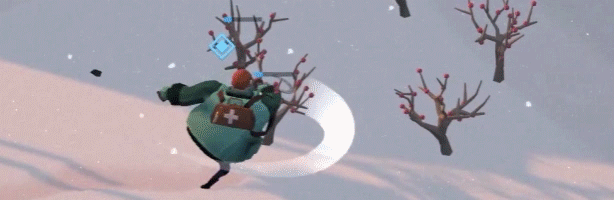
I joined Project Winter in 2021, days before it released on Gamepass. It had already garnered a significant fanbase, so it was my job to design content updates, including new gameplay features, UX features, and levels.
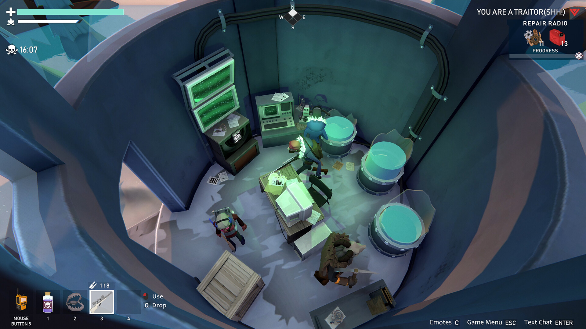
I was often the sole designer on the team and joined when the design and code architecture of the game was well-established. I had to become a Project Winter expert quickly to keep up with the years of knowledge the team had accumulated.
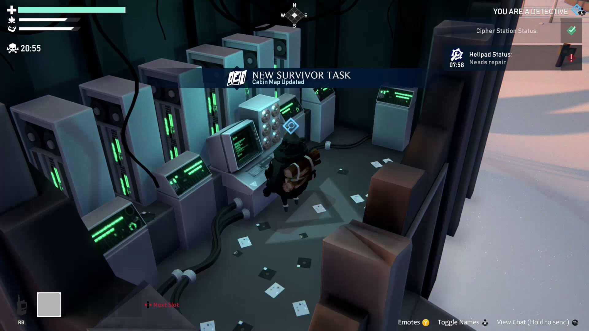
This game had accumulated a significant amount of tech debt in its years of development, necessitating frequent communication with code leadership to ensure that content updates avoid hidden "gotchas".
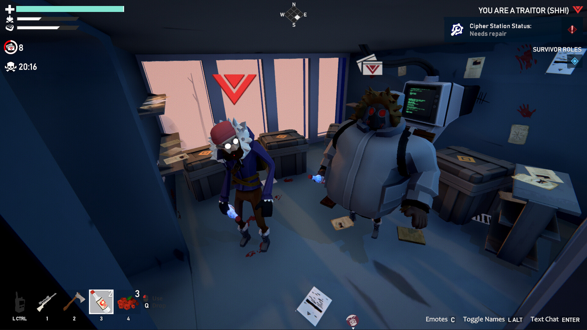
I regularly reviewed our analytics and worked with the community managers in efforts to create content updates that would improve the experience for the most players while ensuring that veteran fans felt heard.
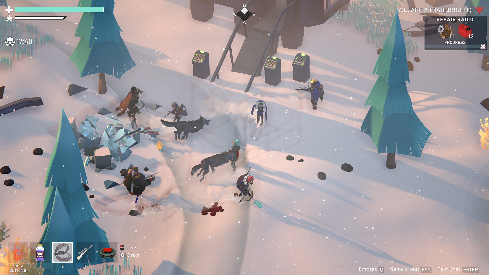
Years of prior updates created a complex network of interactions, including traps, sabotages, weather, environment features, and different game modes. Each update had to account for impacts on the greater ecosystem.
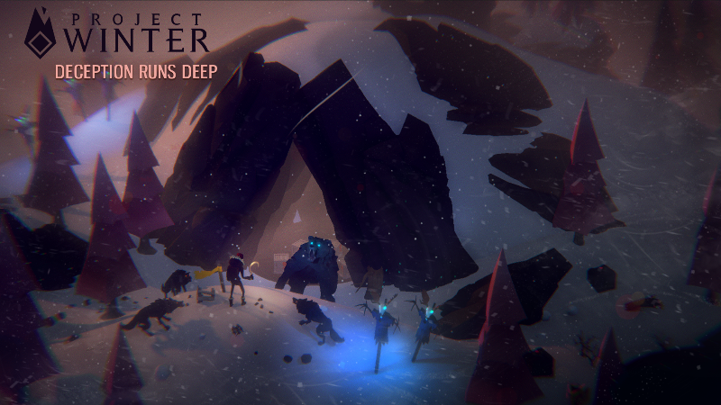
Project Winter maps necessitated close collaboration with art and were expected to have a focal feature. One map I designed was the Deep Woods, where extra-vicious animals lurk on the edges of the map in a dark forest.
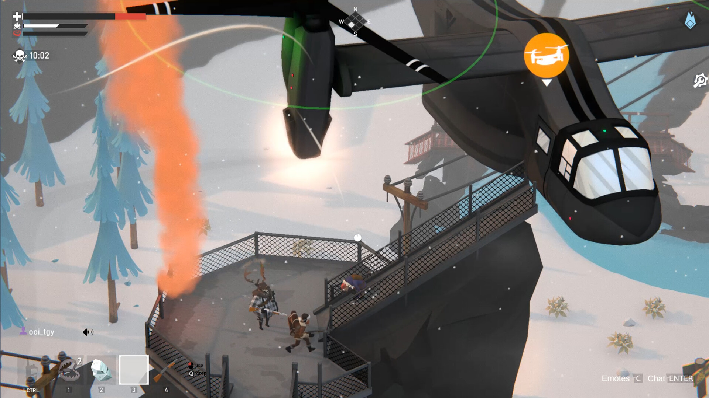
We launched PlayStation and Switch ports while I was on the team. I studied the guidelines for each platform to ensure that future updates adhered to them and flagged existing parts of the game that would need to change.
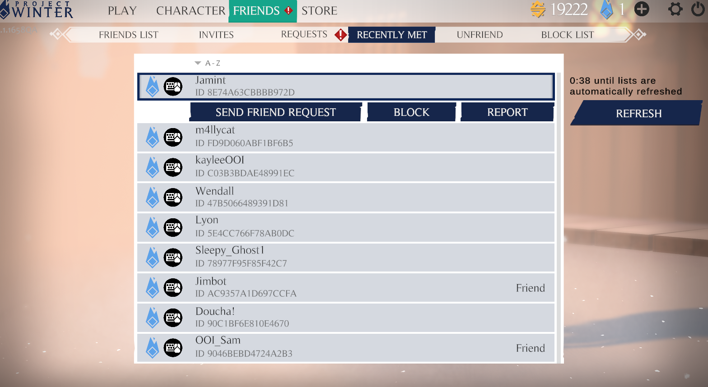
As a social game, once platforms had been introduced, it was apparent that we needed a way for friends to foster cross-platform relationships. One of my biggest UX updates was a custom, cross-platform friends list.
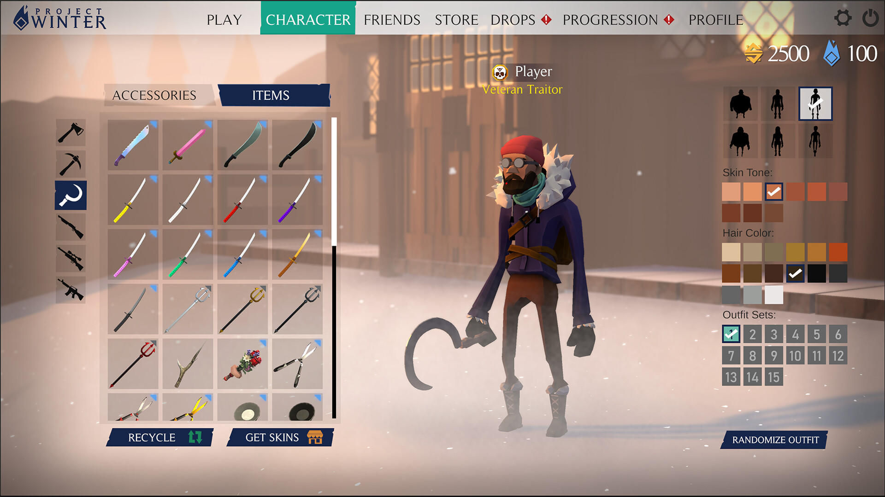
As demos began to grow in prominence on Steam, I was asked to rejoin the Project Winter team to design one. We had to balance between providing demo players enough play to get hooked while maintaining the value of purchasing the full product.
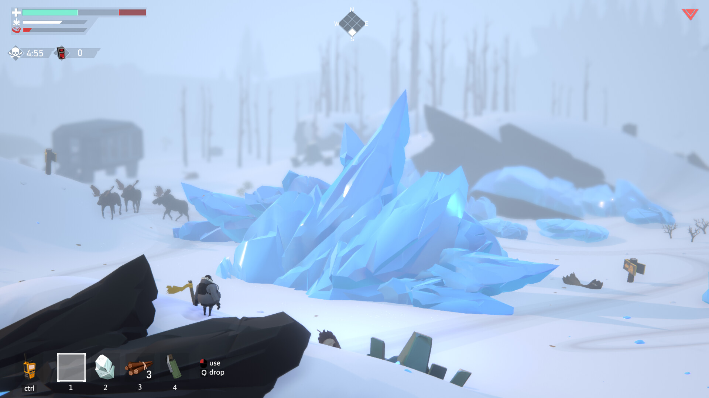
Years of changing design hands had sent Project Winter's documentation into disarray. After Friend Pass's launch, a producer impressed with my documentation on other projects asked me to reorganize Project Winter's documentation, which often involved full spec rewrites.
Later still, I was asked again to rejoin the team for a major overhaul of Project Winter in preparation for us being one of Epic's free games of the week. I performed a major analytics review of all our prior updates to determine what would be received best.
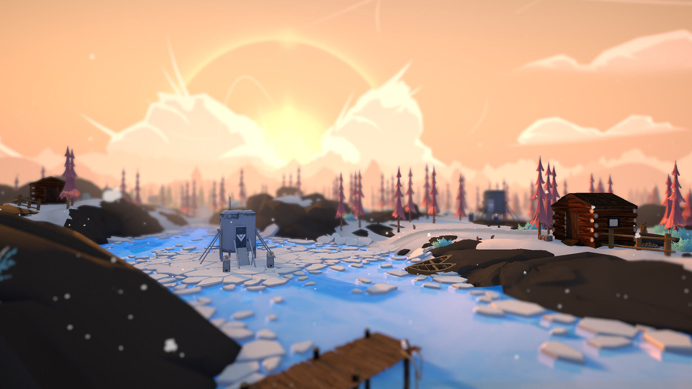
A new game mode geared towards faster, simplified gameplay and 3 new maps were the features of choice. I worked with art to design and implement the maps, which were denser than our previous maps to account for the new mode.
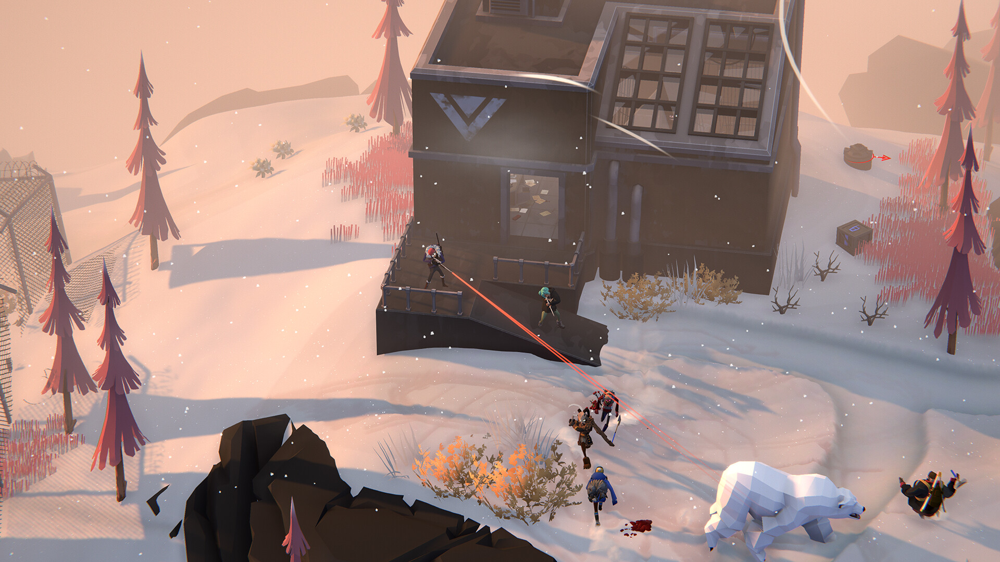
The game mode was designed to bolster the social and action aspects of Project Winter that fans enjoyed while smoothing complex areas that new players got stuck on. A stronger emphasis was put on exciting firefights, clever trap placement, and voting players out.